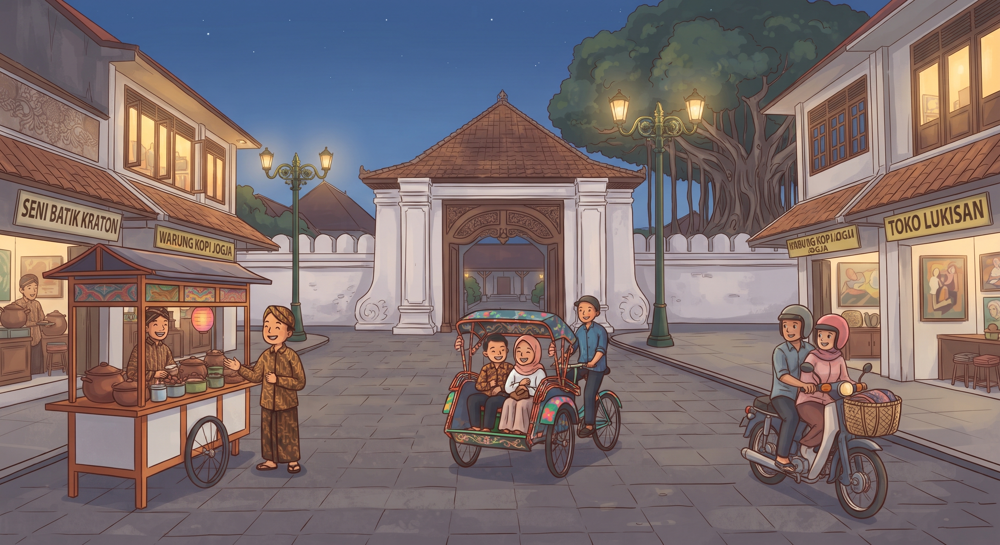

Warisan budaya
Jelajahi candi dan kawasan bersejarah yang menyimpan kisah masa lalu.
Jelajahi sudut istimewa
Temukan perpaduan candi bersejarah, suasana kota yang hangat, dan pengalaman budaya yang tak terlupakan.
Jelajahi peta
Rencana perjalananmu dimulai di sini
Website ini membantu wisatawan memilih tempat yang cocok sebelum berkunjung. Klik lokasi pada peta interaktif, baca informasi destinasi, lalu kirim pertanyaan atau rencana perjalanan melalui halaman kontak.
Jelajahi candi dan kawasan bersejarah yang menyimpan kisah masa lalu.
Rasakan kehidupan lokal, keramahan warga, dan suasana jalanan yang khas.
Luangkan waktu menikmati pemandangan alam dan pesisir selatan.
Tiga tempat, satu peta